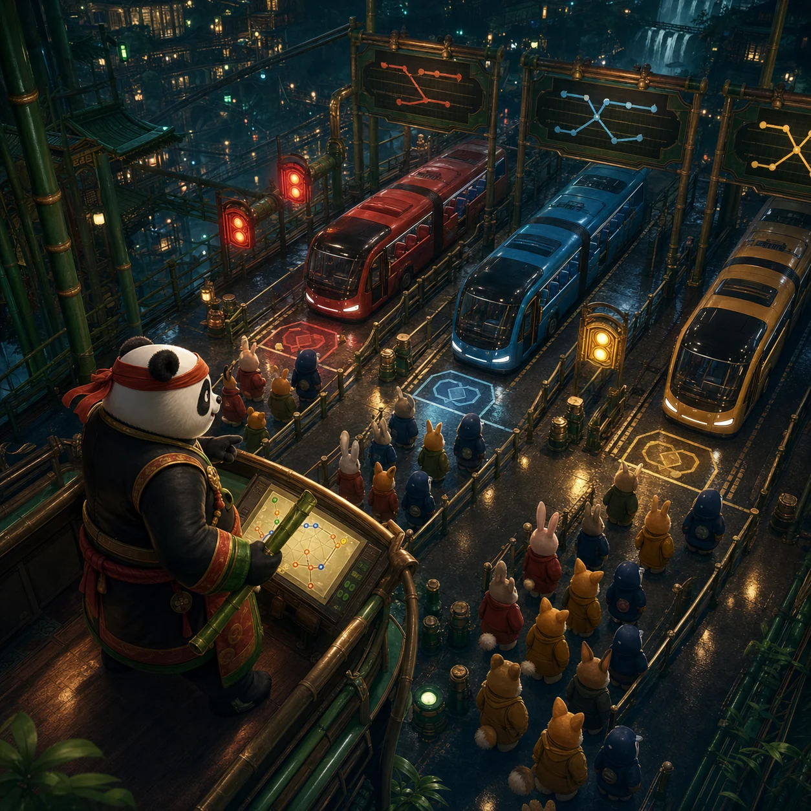

PANKO'S BUS STOP
Panko's Bus Jam
Send each waiting passenger to the matching bus before its seats fill.
How to play
Tap the front passenger in a queue. They board the bus of the same color. Plan the order when a bus is nearly full.

PANKO'S BUS STOP
Send each waiting passenger to the matching bus before its seats fill.
Tap the front passenger in a queue. They board the bus of the same color. Plan the order when a bus is nearly full.